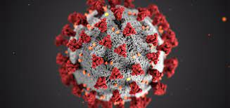

Remueven al fiscal anticorrupcion
La fiscal general de Guatemala, Consuelo Porras, destituyó de su cargo al fiscal especial Juan Francisco Sandoval, de la Fiscalía Especial contra la Impunidad (FECI), una decisión fuertemente criticada por Estados Unidos y Human Rights Watch, entre otros.
Mas sobre la noticia
Coronavirus
La COVID-19 afecta de distintas maneras en función de cada persona. La mayoría de las personas que se contagian presentan síntomas de intensidad leve o moderada, y se recuperan sin necesidad de hospitalización.

Mas sobre la noticia
Protesta contra Giammattei
En Guatemala, ante un fuerte aumento de casos de covid-19 y la falta de vacunas, se convocaron marchas masivas para pedir la dimisión del presidente, Alejandro Giammattei. El pasado lunes, el mandatario decretó el estado de prevención para restringir las manifestaciones en el país.
Mas sobre la noticia
Menores identificados al querer cruzar a E.E.U.U
La cancillería de Guatemala informó a través de un comunicado que, entre el 12 y 13 de julio de este año, el consulado del país centroamericano en Tucson, Arizona, ha logrado identificar a un total de 80 menores de edad de origen guatemalteco que ingresaron de manera ilegal a Estados Unidos.
Mas sobre la noticia
Prohibiran las manifestaciones en Guatemala
El presidente de Guatemala, Alejandro Giammattei, anunció este lunes que el martes decretará un estado de prevención en la reunión del consejo de ministros para limitar las manifestaciones en todo el territorio nacional.
Mas sobre la noticia
Luis Vasquez y su gran debut!!!
El Comité Olímpico Guatemalteco (COG) compartió la agenda deportiva de los atletas connacionales que participan en los Juegos Olímpicos Tokio 2021 a desarrollarse para la tarde y noche del miércoles 28 y la madrugada del jueves 29 de julio.
Mas Sobre la Noticia
Kevin cordon Clasifica a Octavos
El badmintonista zacapaneco Kevin Cordón logró un triunfo en la fase de grupos del bádminton de los Juegos Olímpicos Tokio 2021 ante el hongkonés Angus NG Ka Long por 2-0, con parciales de 22-20 y 21-13
Mas sobre la noticia
Tiradoras Guatemaltecas en su debut
Las guatemaltecas Adriana Ruano y Waleska Soto hicieron anoche su debut en los Juegos Olímpicos Tokio 2021.
Mas sobre la Noticia